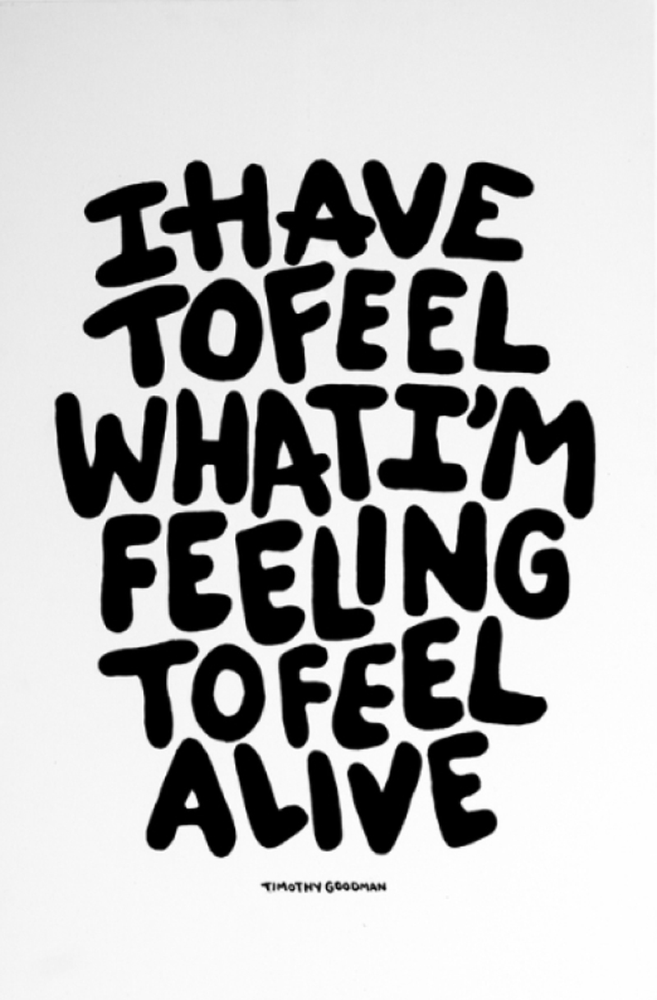

How does Timothy Goodman use design and illustration to address social and cultural issues in his creative projects?
By Kaley Sheerin
Introduction
In this essay I will be exploring the question of how the artist Timothy Goodman uses design and illustration to address social and cultural issues within his creative projects in the current, modern age. In my interpretation, this means how an artist uses their platform and work for activism and social change; not just for profits or aesthetic value. The subject of this essay will be the New York City based illustrator and muralist, Timothy Goodman. Goodman creates graphic, illustrative work which often includes a lot of typography. He also usually works on a large scale, creating public murals around NYC, making him the perfect candidate for creating activist art. In this essay, I will explore topics such as activism in the age of technology; and how consumerism and commercialisation impact an artist's creative process and outcomes in relation to this. Correspondingly, I will explore how the context of the present day makes Goodman’s work different from similar artists who have come before, mainly Keith Haring. I will also divulge into what activism is, and how the idea of how sharing one's own personal experiences and stories can also be a form of activism. I will focus on breaking these points down and analysing them in the context of how a designer can address social and cultural issues.
Style
As mentioned in my introductory paragraph, Timothy Goodman is a NYC based graphic designer who creates public works. His style is bold, attention grabbing- but also simple. He favours thick black lines and minimal use of colour, though when used, they are bright and saturated. He is also an author, which shines through in his typographic works where he explores topics such as love, dating, mental health and relationships. His storytelling is evident in his series “Memories of a Girl I Never Knew” from his debut 2021 gallery exhibition “TOO YOUNG TO NOT SET MY LIFE ON FIRE”, which details his personal experience with love and heartbreak. As previously mentioned, Goodman also creates a lot of murals, though they are not considered “graffiti” as he is commissioned by businesses to create these works of art. He has also designed packaging for the likes of Oreo and YSL, and has collaborated to make products for UNIQLO, Nike, Staccato, GUESS Watches and many more. The comparison must be made to another NYC based graphic artist and muralist who came before him: Keith Haring. Keith Haring was a prominent street artist of the 1980s, whose unique style still influences designers to this day. Like Goodman, Haring’s work consists of bold, black lines and bright colours with illustrative elements. He made use of public spaces for his artwork- which was groundbreaking at the time. Haring got his recognition from drawing chalk graffiti on the NYC subway. Once again, much like Goodman, Keith Haring also worked with brands throughout his career; designing advertisements for Absolut Vodka, Lucky Strike cigarettes and also for Swatch- with whom he collaborated to design three watches to be sold commercially. Evidently, Keith Haring has had a considerable influence on Timothy Goodman’s work, and their careers have many similarities: but what about in the context of activist art? How do both of these artists’ works address social and cultural issues of their respective times?
Politics
Timothy Goodman is no stranger to exploring socio-political themes in his work. Such an example is his 2026 Trump Tower protest, in which he and other protesters displayed large posters depicting the message “Build Kindness Not Walls”. This demonstration was done in collaboration with the graphic designer Jessica Walsh, whom Goodman had worked with before in his other personal projects. This peaceful demonstration was a clear example of how the artist used his typographic artwork to spread a message of kindness, and to oppose a hateful politician in a very progressive way. His simplistic black and white designs made the message easy to read for passer-byers on the busy streets; showing that the artist considered the location and audience of this piece of work. The demonstration was also widely shared on social media. Goodman has also created a mural, free of charge, for the Cornelia Connelly Center all-girls school. The mural champions an intersectional feminist message, emphasised by his bold typography and vivid colours. It is clear that the artist uses his bold, trendy style to his advantage; catching the attention of a wide audience to spread his message to. These two creative projects were the most prominent examples of activist art I could find in Goodman’s extensive portfolio. The argument could be made that due to him primarily working in commercial settings; making murals for businesses and advertising; this inhibits the artist from making more strongly opinionated or political work, as companies generally try to appear nonpartisan to the public as not to alienate any of their potential customers. Keith Haring, who was also a highly commercialised artist, made a much larger impact with his amount of political work that challenged social and cultural norms of the 1980s. The artist advocated for gay rights in many of his posters. He spoke out on issues such as the aids crisis, New York’s drug addiction problem, nuclear power and South African Apartheid; all which were very pressing societal problems during his time. It could be said that Haring was able to do this and still thrive as an artist due to the 1980s being a period of cultural change, and most importantly, economic growth in the US. This is quite unlike today, with the post-pandemic recession still impacting all facets of life and work, especially in the context of artists such as Timothy Goodman.
“You can be masculine, and you can cry. You can be masculine and go to therapy, masculine and ask for help you know?”
Activism
Although Timothy Goodman may not have as extensive a political activist background as other artists, this is not to say that he doesn’t address social and cultural issues in his design work. In his typographic works, Goodman unabashedly divulges into topics such as his mental health and experience with love and heartbreak. This is especially unconventional coming from a male artist, as there is quite a stigma around men expressing their feelings- especially if done so publicly as Goodman. Though there is a push in today's society to bring awareness to this stigma around men's mental health, there is still a lot of work to be done. I think Timothy Goodman’s work is quite influential in pushing the boundaries to normalise men talking about their feelings. It is in this way I feel that this artist is making a difference with his work. A huge part of Goodman’s personal ethos is that “sharing your own story is a form of personal activism” (Timothy Goodman , 2016) and this is clearly represented in his work. An example of this is the piece “Feel Alive” from his September 2023 gallery exhibition “Every Time I Fall in Love It’s Summer”. The piece reads: “I have to feel what I'm feeling to feel alive”. This embracement of emotions is a refreshing opposition to the toxic masculinity prevalent today that tells men to suppress their emotions. Goodman speaks openly about his mental health in interviews with the press also, not holding back when speaking about his difficult upbringing and his journey with going into therapy. In an interview podcast with Brooklyn Magazine, the artist states; “You can be masculine, and you can cry. You can be masculine and go to therapy, masculine and ask for help you know?” It is in this way that Timothy Goodman creates his own definition of activist artwork.

Conclusion
So, how does Timothy Goodman use design and illustration to address social and political issues in his work? As I explored this question, I came to realise that contemporary activist art is not what it used to be. To be a successful artist is to become a commercial one, and with this comes the watering down of one's personal message and opinions- as if you are creating art for a business, you must represent the business’ ideals. This is why most of Timothy Goodman’s most influential pieces, in my opinion, belong to his personal projects- as you can see his personal story and beliefs being shared unabashedly in the form of graphic design artworks. These pieces, however, are not large-scale street murals like the one's businesses fund him to do- instead they reside in galleries and on social media. For this reason, I cannot be too harsh on Goodman’s supposed lack of consideration of wider social issues which he could be exploring in his work. To compare him to Keith Haring may be unfair, as these two artists are from vastly different time periods. Despite this, I admire Goodman’s dedication to representing his own personal struggles within his work- sharing his own story as a form of activism, which no doubt has had a vast impact on many of those who have viewed it. To quote one of Timothy Goodman’s works, “If you’re making a living as an artist then you are truly performing a miracle. Society is not built for us to survive...”. This quote is especially relevant if one is trying to spread a message in their work. To conclude, I think that in his personal work, using mainly typography and his modern, punchy style; Timothy Goodman uses the full extent of his abilities to address social and cultural issues.